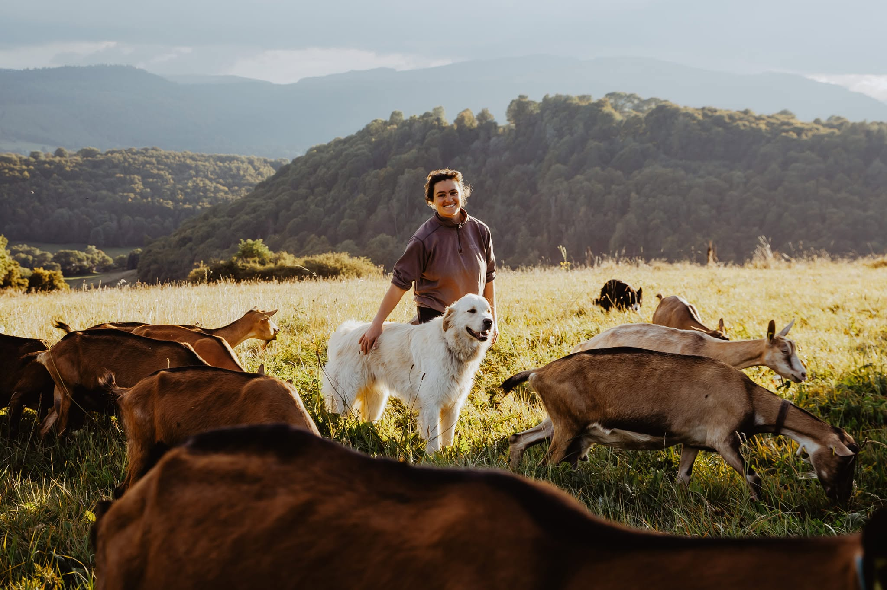
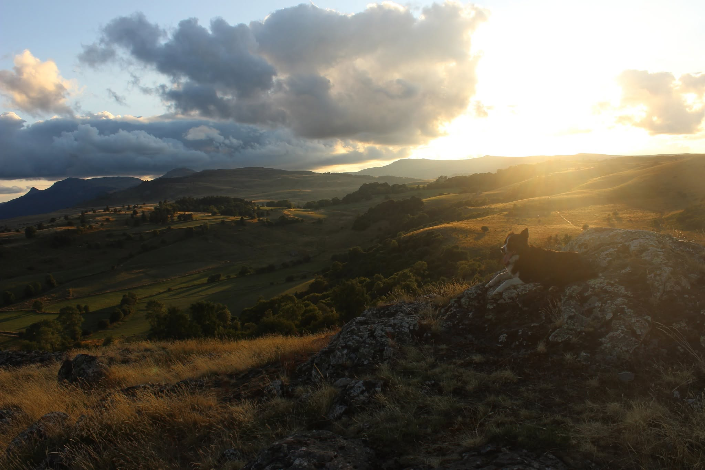

Du lait de nos chèvres, rien d'autre.
Marlène, le patou et le troupeau, un soir d'été au Lapsou
La Chèvrerie du Lapsou est une petite ferme familiale au-dessus de Murat, au cœur des volcans d'Auvergne. Marlène y élève un troupeau de chèvres alpines et transforme leur lait sur place, en cabécous, en fromages affinés et en yaourts.
L'été, les chèvres pâturent les prairies naturelles à 1100 mètres d'altitude. L'hiver, elles mangent le foin récolté sur la ferme. Le lait ne quitte pas l'exploitation : il est travaillé cru, entier, dans l'atelier construit juste à côté de la chèvrerie.
Vous pouvez venir chercher vos fromages tous les jours, matin et soir, et visiter la ferme sur réservation.
Une ferme, un troupeau, des fromages



L'herbe des prairies de montagne et sa flore donnent au lait son goût. On essaie simplement de ne pas l'abîmer. Au Lapsou, face aux monts du Cantal
Primés dès la première saison
En octobre 2021, quelques mois après l'installation de Marlène, les fromages de la chèvrerie ont été récompensés au concours des Fermiers d'Or de la grande région Auvergne-Rhône-Alpes.